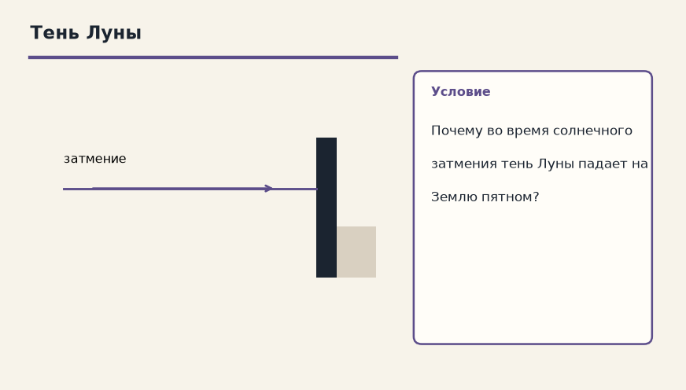
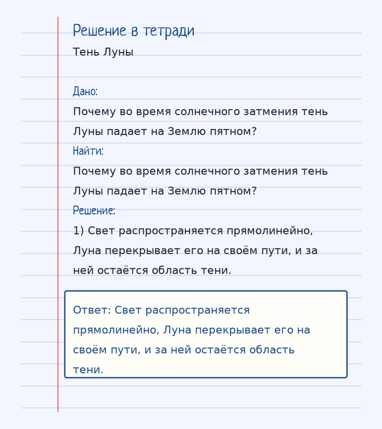
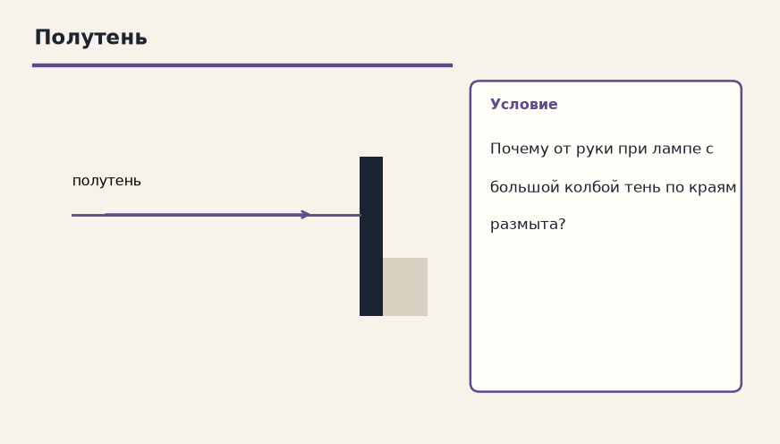
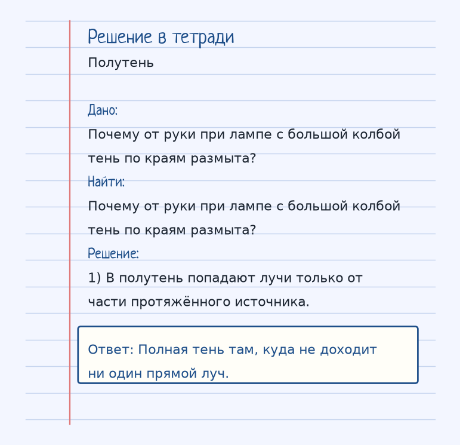

Тема «Закон прямолинейного распространения света»: физический смысл, единицы величин, типичные ошибки и два разобранных примера.

Схема к условию.
Физический смысл
В однородной среде свет распространяется по прямым линиям. Это объясняет образование теней и полутеней.
В однородной среде свет идёт по прямой. Однородная — значит, показатель преломления не меняется от точки к точке, нет границы воды и воздуха внутри участка. На границе закон уже другой: отражение или преломление.
Прямой луч объясняет тень. Если источник маленький, за непрозрачным предметом резкая тень. Если источник протяжённый, есть область полутени, куда свет доходит только от части источника.
Солнечное затмение — тот же рисунок в астрономическом масштабе. Луна непрозрачна, свет Солнца прямолинеен, и на Землю ложится пятно тени. Лазерная указка в пыльном воздухе показывает отрезок прямой, пока на пути нет границы сред.
Формула и единицы
В однородной среде лучи прямые. Так получаются тень и полутень.
Пояснение
Лазерная указка — луч всегда прямой, если не ставить преграды.
Лазерная указка даёт прямой отрезок, пока не поставить преграду или границу другой среды.
Типичные ошибки
Прямолинейность — про однородную среду. На границе сред луч имеет право сломаться, и это не отменяет закон.
Разобранные примеры. Решение каждого открывается отдельно.
Разбор 1
Тень Луны
Почему во время солнечного затмения тень Луны падает на Землю пятном?
На схеме только условие.
Порядок записи: данные, единицы СИ, искомая величина, ход решения, ответ.
Дано. Почему во время солнечного затмения тень Луны падает на Землю пятном?
В СИ.
Найти. Почему во время солнечного затмения тень Луны падает на Землю пятном?
Решение.
Свет распространяется прямолинейно, Луна перекрывает его на своём пути, и за ней остаётся область тени.
Свет распространяется прямолинейно, Луна перекрывает его на своём пути, и за ней остаётся область тени.

Разбор 2
Полутень
Почему от руки при лампе с большой колбой тень по краям размыта?

На схеме только условие.
Порядок записи: данные, единицы СИ, искомая величина, ход решения, ответ.
Дано. Почему от руки при лампе с большой колбой тень по краям размыта?
В СИ.
Найти. Почему от руки при лампе с большой колбой тень по краям размыта?
Решение.
В полутень попадают лучи только от части протяжённого источника.
Полная тень там, куда не доходит ни один прямой луч.

Разбор 3
Однородная среда
Как распространяется свет в однородной прозрачной среде?
На схеме только условие.
Порядок записи: данные, единицы СИ, искомая величина, ход решения, ответ.
Дано. Среда однородна
В СИ.
Числового перевода нет.
Найти. Траектория
Решение.
Прямолинейно.
Прямолинейно.
Разбор 4
Полутень
Почему край тени от широкой лампы размыт?
На схеме только условие.
Порядок записи: данные, единицы СИ, искомая величина, ход решения, ответ.
Дано. Протяжённый источник
В СИ.
Числового перевода нет.
Найти. Причина
Решение.
В область полутени попадает свет только от части источника.
Есть полутень.
Разбор 5
Полная тень
Куда не попадает ни один прямой луч от источника?
На схеме только условие.
Порядок записи: данные, единицы СИ, искомая величина, ход решения, ответ.
Дано. Преграда
В СИ.
Числового перевода нет.
Найти. Область
Решение.
В область полной тени.
В полную тень.
Разбор 6
Граница сред
Сохраняется ли прямолинейность на границе двух сред?
На схеме только условие.
Порядок записи: данные, единицы СИ, искомая величина, ход решения, ответ.
Дано. Луч падает на границу
В СИ.
Числового перевода нет.
Найти. Поведение
Решение.
На границе луч может отразиться или преломиться.
Нет, возможны отражение и преломление.
Разбор 7
Туман
Почему в неоднородной атмосфере луч может искривляться?
На схеме только условие.
Порядок записи: данные, единицы СИ, искомая величина, ход решения, ответ.
Дано. Показатель меняется от точки к точке
В СИ.
Числового перевода нет.
Найти. Причина
Решение.
Среда уже не однородная, закон прямолинейности в таком виде не выполняется.